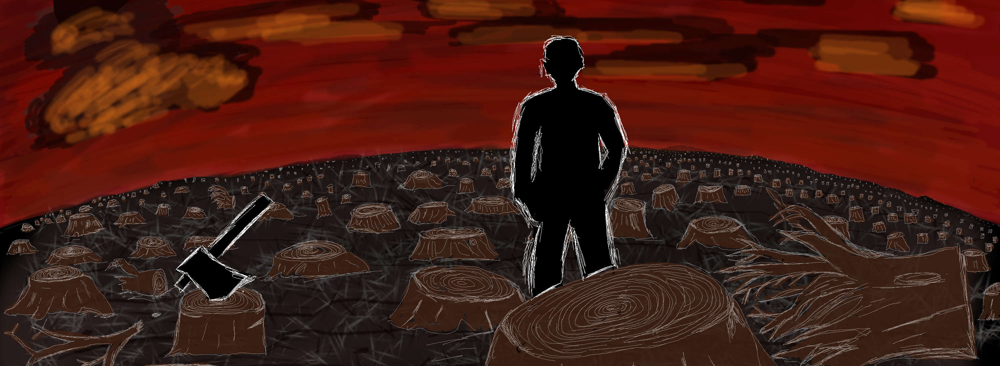

2.1 - Quelques histoires
Nous commencerons avec quelques courtes histoires. Chaque histoire est un appel volontairement exagéré pour un apprentissage automatique interprétable. Si vous êtes pressé, vous pouvez les passer. Si vous voulez être diverti et (dé)motivé, poursuivez leur lecture !
Le format est inspiré par les “Tech Tales” de Jack Clark dans sa Newsletter Import AI. Si vous aimez ce genre d’histoires ou si vous vous intéressez à l’IA, je vous recommande de vous inscrire.
2.1.1 - La foudre ne frappe jamais deux fois
2030: Un laboratoire médical en Suisse
“Il n’y a certainement pas pire façon de mourir !” résuma Tom, essayant de trouver quelque chose de positif dans la tragédie. Il retira la pompe de la perfusion. “Il est juste mort pour de mauvaises raisons,” ajouta Lena. “Et certainement avec la mauvaise pompe à morphine ! Cela crée juste plus de travail pour nous !” se plaignit Tom en dévissant le panneau arrière de la pompe. Après avoir retiré toutes les vis, il souleva le panneau et le mit de côté. Il brancha un câble sur le port de diagnostic. “Tu ne te plaignais pas d’avoir un travail, n’est-ce pas ?” Lena lui lança un sourire moqueur. “Bien sûr que non. Jamais !” s’exclama-t-il avec un ton sarcastique.
Il démarra l’ordinateur de la pompe. Lena brancha l’autre extrémité du câble à sa tablette. “Bon, le diagnostic est en cours,” annonça-t-elle. “Je suis vraiment curieuse de savoir ce qui a mal tourné.” “Ça a certainement envoyé notre John Doe au Nirvana. Cette haute concentration de ce truc à la morphine. Mec. Je veux dire… c’est une première, non ? Normalement, une pompe cassée donne trop peu de la douce substance ou rien du tout. Mais jamais, tu sais, comme cette folle injection,” expliqua Tom. “Je sais. Tu n’as pas à me convaincre… Hey, regarde ça.” Lena leva sa tablette. “Tu vois ce pic ici ? C’est la puissance du mélange d’antidouleurs. Regarde ! Cette ligne montre le niveau de référence. Le pauvre gars avait un mélange d’antidouleurs dans son système sanguin qui aurait pu le tuer 17 fois. Injecté par notre pompe ici. Et ici…” elle fit glisser, “ici tu peux voir le moment de la mort du patient.” “Alors, une idée de ce qui s’est passé, chef ?” demanda Tom à son superviseur. “Hm… Les capteurs semblent être bons. Rythme cardiaque, niveaux d’oxygène, glucose,… Les données ont été collectées comme prévu. Quelques valeurs manquantes dans les données d’oxygène sanguin, mais ce n’est pas inhabituel. Regarde ici. Les capteurs ont également détecté le ralentissement du rythme cardiaque du patient et des niveaux extrêmement bas de cortisol causés par le dérivé de morphine et d’autres agents bloquant la douleur.” Elle continua de faire défiler le rapport de diagnostic. Tom était captivé par l’écran. C’était sa première enquête sur une véritable défaillance d’appareil.
“Ok, voici notre premier élément du puzzle. Le système a échoué à envoyer un avertissement au canal de communication de l’hôpital. L’avertissement a été déclenché, mais rejeté au niveau du protocole. Cela pourrait être de notre faute, mais cela pourrait aussi être la faute de l’hôpital. S’il te plaît, envoie les journaux à l’équipe informatique,” dit Lena à Tom. Tom acquiesça, les yeux toujours fixés sur l’écran. Lena continua : “C’est étrange. L’avertissement aurait également dû provoquer l’arrêt de la pompe. Mais il a manifestement échoué à le faire. Cela doit être un bug. Quelque chose que l’équipe qualité a manqué. Quelque chose de vraiment mauvais. Peut-être que c’est lié au problème de protocole.” “Donc, le système d’urgence de la pompe a d’une manière ou d’une autre été rompu, mais pourquoi la pompe est-elle devenue folle et a injecté autant d’antidouleurs dans John Doe ?” se demanda Tom. “Bonne question. Tu as raison. Même en cas de défaillance de l’urgence du protocole, la pompe n’aurait pas dû administrer autant de médicament. L’algorithme aurait dû s’arrêter bien plus tôt de lui-même, étant donné le faible niveau de cortisol et d’autres signes d’alerte,” expliqua Lena. “Peut-être un coup de malchance, comme une chose sur un million, comme être frappé par la foudre ?” demanda Tom. “Non, Tom. Si tu avais lu la documentation que je t’ai envoyée, tu aurais su que la pompe a d’abord été entraînée dans des expériences sur des animaux, puis plus tard sur des humains, pour apprendre à injecter la quantité parfaite d’antidouleurs en fonction des entrées sensorielles. L’algorithme de la pompe peut être opaque et complexe, mais il n’est pas aléatoire. Cela signifie que dans la même situation, la pompe se comporterait exactement de la même manière à nouveau. Notre patient mourrait à nouveau. Une combinaison ou une interaction indésirable des entrées sensorielles doit avoir déclenché le comportement erroné de la pompe. C’est pourquoi nous devons creuser plus profondément et découvrir ce qui s’est passé ici,” expliqua Lena.
“Je vois…,” répondit Tom, perdu dans ses pensées. “Le patient n’allait-il pas mourir bientôt de toute façon ? À cause du cancer ou de quelque chose ?” Lena hocha la tête en lisant le rapport d’analyse. Tom se leva et alla à la fenêtre. Il regarda dehors, les yeux fixés sur un point au loin. “Peut-être que la machine lui a rendu service, tu sais, en le libérant de la douleur. Plus de souffrance. Peut-être qu’elle a juste fait ce qu’il fallait. Comme la foudre, mais, tu sais, une bonne. Je veux dire comme la loterie, mais pas aléatoire. Mais pour une raison. Si j’étais la pompe, j’aurais fait la même chose.” Elle finalement leva la tête et le regarda. Il continuait de regarder quelque chose à l’extérieur. Tous deux restèrent silencieux quelques instants. Lena baissa à nouveau la tête et continua l’analyse. “Non, Tom. C’est un bug… Juste un sacré bug.”
2.1.2 - Perte de confiance
2050: Une station de métro à Singapour

Elle se précipita vers la station de métro Bishan. Ses pensées étaient déjà au travail. Les tests pour la nouvelle architecture neuronale devraient être terminés maintenant. Elle dirigeait la refonte du “Système de Prédiction de l’Affinité Fiscale pour les Entités Individuelles” du gouvernement, qui prédit si une personne cachera de l’argent au bureau des impôts. Son équipe a conçu une pièce d’ingénierie élégante. Si réussi, le système servirait non seulement l’administration fiscale, mais alimenterait également d’autres systèmes tels que le système d’alerte antiterroriste et le registre commercial. Un jour, le gouvernement pourrait même intégrer les prédictions dans le Score de Confiance Civique. Le Score de Confiance Civique estime la fiabilité d’une personne. Cette estimation affecte chaque aspect de votre vie quotidienne, comme obtenir un prêt ou le temps d’attente pour un nouveau passeport. Alors qu’elle descendait l’escalator, elle imaginait à quoi pourrait ressembler l’intégration du système de son équipe dans le Système de Score de Confiance Civique.
Elle essuya machinalement sa main sur le lecteur RFID sans réduire sa vitesse de marche. Son esprit était occupé, mais une dissonance entre les attentes sensorielles et la réalité sonna l’alarme dans son cerveau.
Trop tard.
Elle se cogna le nez contre le portillon d’entrée du métro et tomba sur les fesses au sol. La porte aurait dû s’ouvrir, … mais elle ne l’a pas fait. Abasourdie, elle se leva et regarda l’écran à côté du portillon. “Veuillez réessayer plus tard,” suggéra un smiley à l’air sympathique sur l’écran. Une personne passa à côté d’elle et, sans lui prêter attention, essuya sa main sur le lecteur. La porte s’ouvrit et il passa. La porte se referma. Elle essuya son nez. Ça faisait mal, mais au moins ça ne saignait pas. Elle tenta d’ouvrir la porte, mais fut à nouveau rejetée. C’était étrange. Peut-être que son compte de transport public n’avait pas assez de jetons. Elle regarda sa montre intelligente pour vérifier le solde du compte.
“Connexion refusée. Veuillez contacter votre Bureau de Conseil aux Citoyens !” l’informa sa montre.
Un sentiment de nausée la frappa comme un coup de poing dans l’estomac. Elle soupçonnait ce qui s’était passé. Pour confirmer sa théorie, elle lança le jeu mobile “Sniper Guild”, un jeu de tir à la première personne. L’application se ferma automatiquement, ce qui confirma sa théorie. Elle devint étourdie et s’assit à nouveau sur le sol.
Il n’y avait qu’une seule explication possible : Son Score de Confiance Civique avait chuté. Substantiellement. Une petite baisse signifiait des désagréments mineurs, comme ne pas obtenir de vols en première classe ou devoir attendre un peu plus longtemps pour les documents officiels. Un score de confiance faible était rare et signifiait que vous étiez classé comme une menace pour la société. Une mesure pour traiter ces personnes était de les éloigner des lieux publics tels que le métro. Le gouvernement restreignait les transactions financières des sujets avec de faibles Scores de Confiance Civique. Ils commençaient également à surveiller activement votre comportement sur les réseaux sociaux et allaient même jusqu’à restreindre certains contenus, comme les jeux violents. Il devenait exponentiellement plus difficile d’augmenter votre Score de Confiance Civique plus il était bas. Les personnes avec un score très faible ne se rétablissaient généralement jamais.
Elle ne pouvait penser à aucune raison pour laquelle son score aurait dû chuter. Le score était basé sur l’apprentissage automatique. Le Système de Score de Confiance Civique fonctionnait comme un moteur bien huilé qui réglait la société. La performance du Système de Score de Confiance était toujours étroitement surveillée. L’apprentissage automatique était devenu bien meilleur depuis le début du siècle. Il était devenu si efficace que les décisions prises par le Système de Score de Confiance ne pouvaient plus être contestées. Un système infaillible.
Elle rit dans le désespoir. Système infaillible. Si seulement. Le système a rarement échoué. Mais il a échoué. Elle doit être l’un de ces cas spéciaux ; une erreur du système ; désormais une paria. Personne n’osait remettre en question le système. Il était trop intégré dans le gouvernement, dans la société elle-même, pour être remis en question. Dans les quelques pays démocratiques restants, il était interdit de former des mouvements antidémocratiques, non parce qu’ils étaient intrinsèquement malveillants, mais parce qu’ils déstabiliseraient le système actuel. La même logique s’appliquait aux algocraties désormais plus courantes. La critique des algorithmes était interdite en raison du danger pour le statu quo.
La confiance algorithmique était le tissu de l’ordre social. Pour le bien commun, les fausses notations de confiance rares étaient tacitement acceptées. Des centaines d’autres systèmes de prédiction et de bases de données alimentaient le score, rendant impossible de savoir ce qui a causé la chute de son score. Elle se sentait comme si un grand trou noir s’ouvrait en elle et sous elle. Avec horreur, elle regarda dans le vide.
Son système d’affinité fiscale a finalement été intégré dans le Système de Score de Confiance Civique, mais elle n’a jamais pu le savoir.
2.1.3 - Les trombones de Fermi
Année 612 ACM (Après Colonisation de Mars): Un musée sur Mars

“L’histoire, c’est ennuyeux,” murmura Xola à son amie. Xola, une fille aux cheveux bleus, chassait paresseusement l’un des drones projecteurs bourdonnant dans la salle avec sa main gauche. “L’histoire est importante,” dit le professeur d’une voix contrariée en regardant les filles. Xola rougit. Elle ne s’attendait pas à ce que son professeur l’entende.
“Xola, qu’as-tu appris?” demanda le professeur. “Que les anciens ont épuisé toutes les ressources de la planète Terrienne et sont ensuite morts?” demanda-t-elle prudemment. “Non. Ils ont rendu le climat chaud et ce n’étaient pas les gens, c’étaient les ordinateurs et les machines. Et c’est la planète Terre, pas la planète Terrienne,” ajouta une autre fille nommée Lin. Xola acquiesça. Avec un soupçon de fierté, le professeur sourit et acquiesça. “Vous avez toutes les deux raison. Savez-vous pourquoi cela s’est passé?” “Parce que les gens étaient à courte vue et avides?” demanda Xola. “Les gens ne pouvaient pas arrêter leurs machines !” s’exclama Lin.
“Encore une fois, vous avez toutes les deux raison,” décida le professeur, “mais c’est bien plus compliqué que cela. La plupart des gens à l’époque n’étaient pas conscients de ce qui se passait. Certains ont vu les changements drastiques, mais ne pouvaient pas les inverser. Le morceau le plus célèbre de cette période est un poème d’un auteur anonyme. Il capture le mieux ce qui s’est passé à cette époque. Écoutez bien !”
Le professeur débuta le poème. Une douzaine de petits drones se reposionnèrent devant les enfants et projetèrent la vidéo directement dans leurs yeux. Elle montrait une personne en costume debout dans une forêt constituée seulement de souches d’arbres. Il commença à parler :
Les machines calculent ; les machines prédisent.
Nous marchons comme si nous en faisions partie.
Nous cherchons un optimum comme formés.
L’optimum est unidimensionnel, local et non contraint.
Silicium et chair, à la poursuite de l’exponentialité.
La croissance est notre mentalité.
Quand toutes les récompenses sont collectées,
et les effets secondaires négligés ;
Quand toutes les pièces sont minées,
et que la nature est laissée pour compte ;
Nous serons en difficulté,
Après tout, la croissance exponentielle est une bulle.
La tragédie des communs se déroule,
Explose,
Devant nos yeux.
Calculs froids et cupidité glaciale,
Remplissent la terre de chaleur.
Tout meurt,
Et nous nous conformons.
Comme des chevaux avec des œillères, nous courons la course de notre propre création,
Vers le Grand Filtre de la civilisation.
Et ainsi nous marchons sans relâche.
Comme si nous faisions partie de la machine.
Embrassant l’entropie.
“Un sombre souvenir,” dit le professeur pour briser le silence dans la salle. “Il sera téléchargé dans votre bibliothèque. Votre devoir est de le mémoriser jusqu’à la semaine prochaine.” Xola soupira. Elle réussit à attraper l’un des petits drones. Le drone était chaud à cause du CPU et des moteurs. Xola aimait la façon dont il réchauffait ses mains.